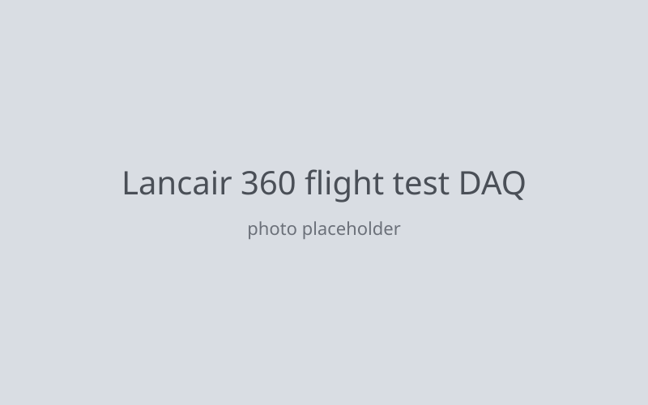

Lancair 360 flight test DAQ (2012–2013)

A data acquisition system to measure the actual cruise performance of a Lancair 360. It logged static pressure, dynamic pressure, elevator position, and manifold pressure, with a real-time display. Sensors were integrated over RS-232, I2C, and SPI on a manufacturer-ready PCB designed in EagleCAD. Supported data reduction and post-test analysis toward a Society of Flight Test Engineers (SFTE) publication.